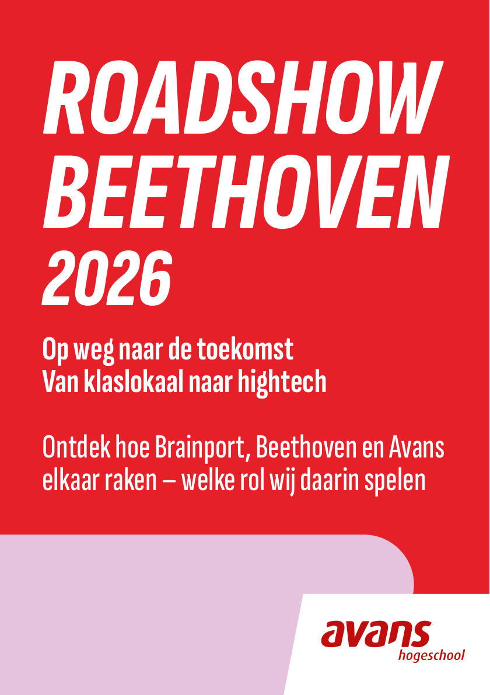
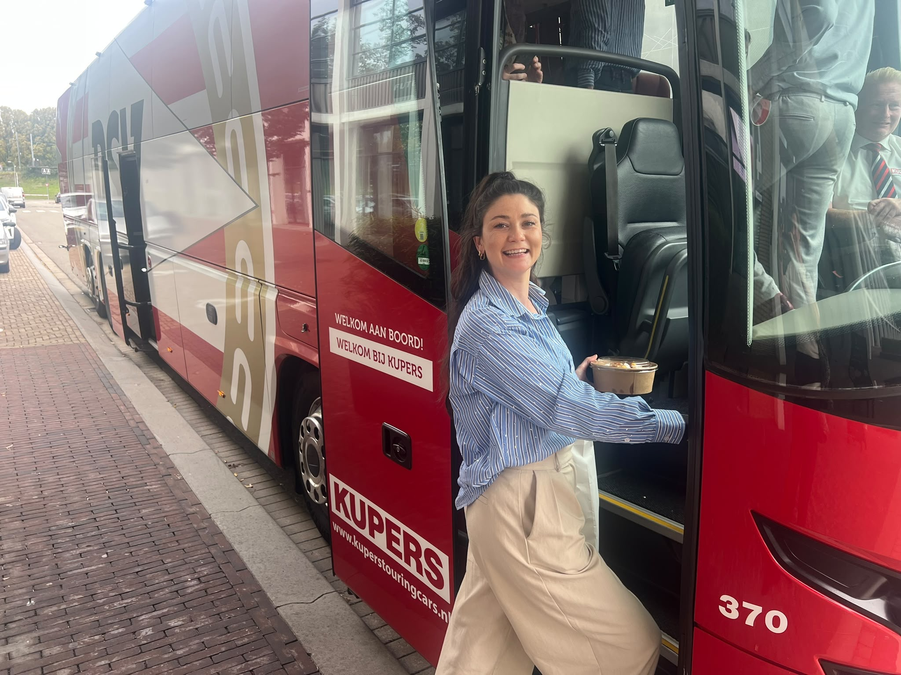
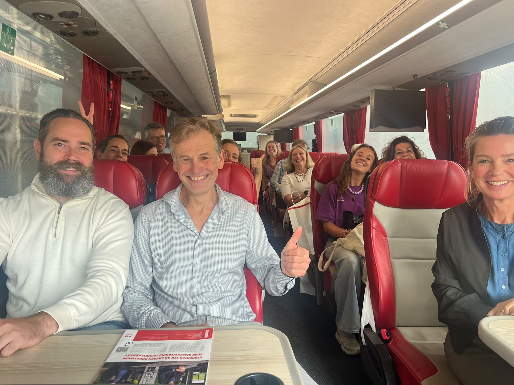
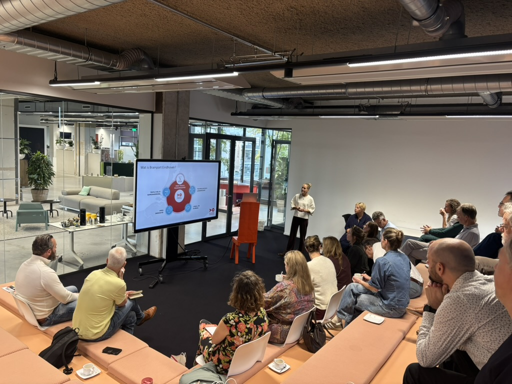
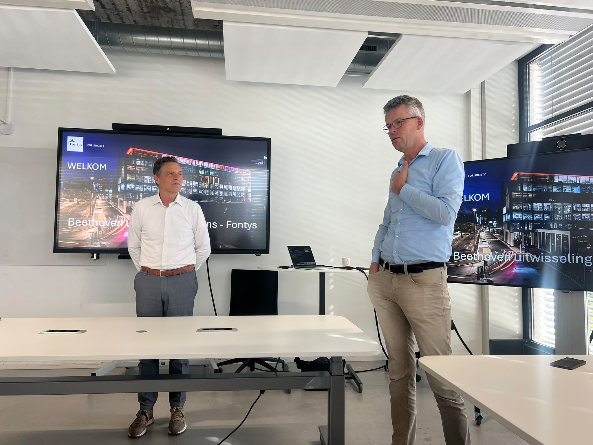
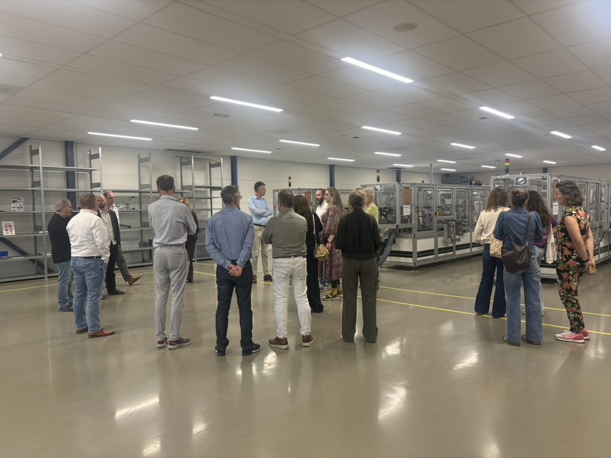
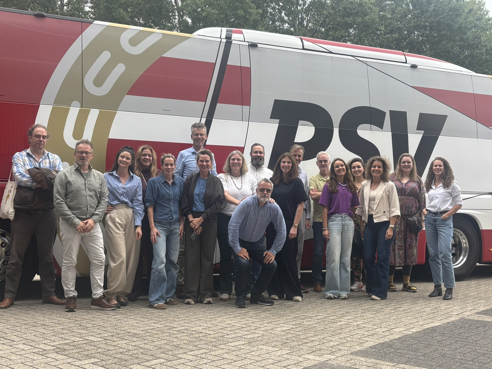

Grenzeloos Goed Opgroeien
Congres over internationalisering van de regio en de betekenis voor onderwijs.
Meer over het congres →Beethoven studiedag · 1 oktober 2026
Een roadshow langs Brainport Development, Fontys en VDL IM. Bij iedere halte vind je foto’s, de kern van de presentaties en links naar de bronnen.
Volg de rode bus ↓Geluid staat aan. Blokkeert je browser automatisch afspelen? Gebruik de knop op de film. Open de film als bestand.
Van vertrek tot terugkomst: scroll langs de haltes en stap in waar je meer wilt weten.
De groep verzamelt in Den Bosch. Om 09:00 vertrekt de bus naar de eerste halte.
Net een schoolreis: bij het instappen kreeg iedereen een tasje met iets te eten en te drinken. Daarin zat ook een glossy over de bredere context van Beethoven en de mensen die vanuit Avans meewerken.

Het Beethovenverhaal, voorbeelden uit Avans en de mensen achter het programma.
Bekijk de glossy (PDF) →

Brainport plaatste de studiedag in de bredere opgave voor de microchipsector en de regionale arbeidsmarkt.

Bij Fontys ging het over samenwerking rond Beethoven: jongeren bereiken, goede studiekeuzes mogelijk maken en de aansluiting in de onderwijsketen verbeteren.

Tijd om de ochtend te laten bezinken en met collega’s ideeën uit te wisselen.
Het middagbezoek brengt de groep naar VDL Industrial Modules en de praktijk van de hightech maakindustrie.
Wat ons opviel tijdens het bezoek: VDL IM heeft veel vrouwen aan de techniek weten te verbinden. Het bedrijf is bovendien met het onderwijs in gesprek over een tweede leven voor machines uit de coronatijd, zodat die kunnen bijdragen aan het opleiden van nieuwe mensen en aan ons onderwijs.

Om 16:30 vertrekt de bus. Uiterlijk om 17:30 is de groep terug in Den Bosch.
De rode draad van de dag: de ontwikkeling van technisch talent vraagt om samenwerking tussen onderwijs, bedrijven en de regio.

Blijf aanhaken
We zijn door onze partners uitgenodigd voor de volgende evenementen. Ook na de studiedag zijn er momenten om kennis uit te wisselen en de ontwikkelingen in de regio te volgen. Via Brainport Academy kun je je daarnaast verder verdiepen.
Congres over internationalisering van de regio en de betekenis voor onderwijs.
Meer over het congres →Ideeën en ontmoetingen rond techniek in het onderwijs.
Meer over het festival →Informatie over vraagarticulatie en kwartaalinzichten rond vacatures.
Ga naar Brainport Academy →